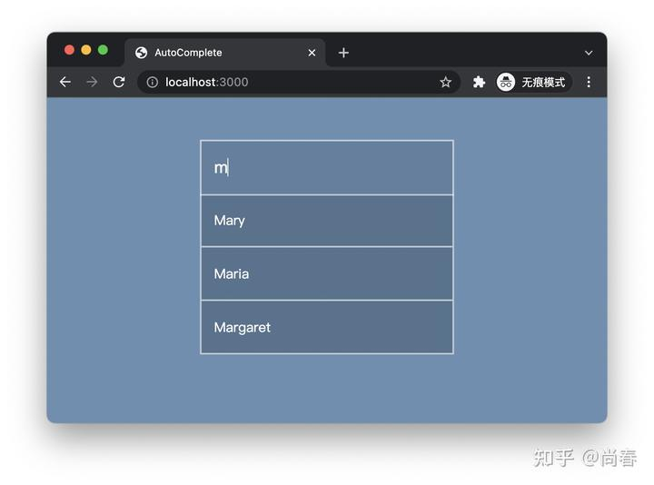
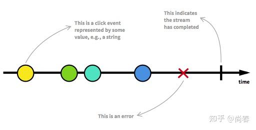
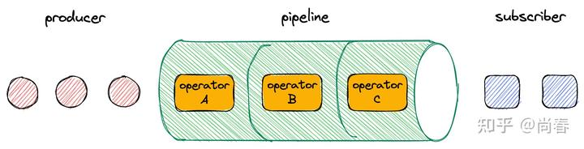
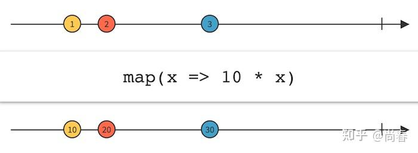
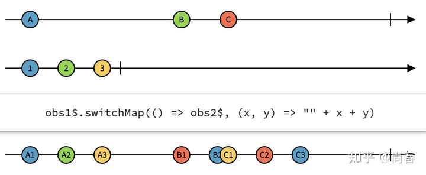
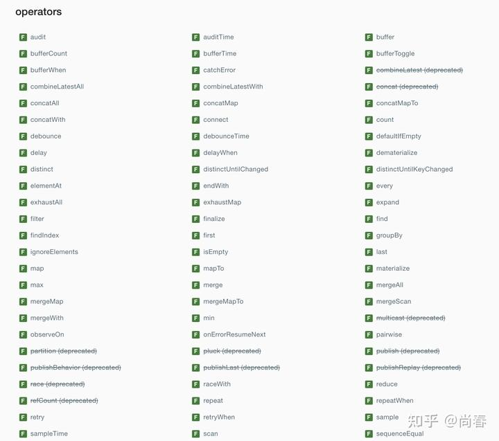
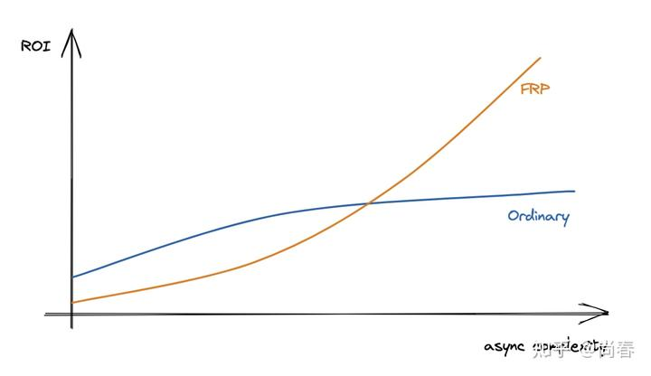
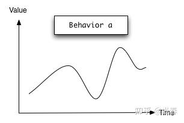
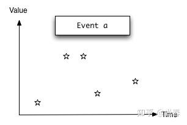
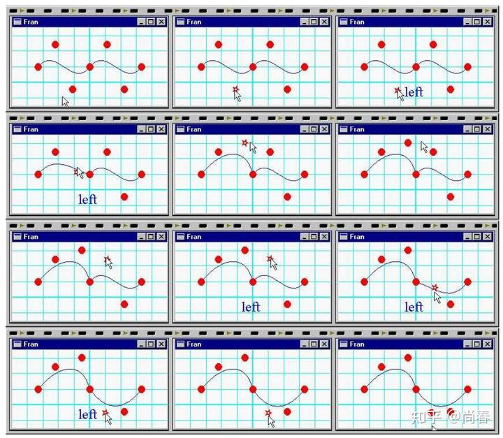

前端中的 Functional Reactive Programming
Contents
由于思维方式上的显著差异，以 RxJS 为代表的函数式响应式编程（Functional Reactive Programming，简称 FRP）在前端工程师中有些“水土不服”，喜欢的推崇备至，然而对于更多开发者来说它却像“阳春白雪”一般，叫好不叫座。
本文尝试从一个实际案例开始，通过对比普通实现和基于 RxJS 的版本阐释 FRP 的核心要义，之后简要介绍 RxJS 的核心概念，以及一些实际示例。希望能够帮助一些还在观望的同学更进一步了解这种编程范式。
AutoComplete
自动补全是很多前端工程师都曾接触过的实用功能：当用户在文本框中输入字符时，将当前输入内容传递给后端服务拿到可能的自动补全结果，并在文本框下方列出供用户选择。

普通实现
比较传统的实现思路非常直接，直接监听文本框的 keyup 事件，然后取数据后更新 UI 即可。代码如下：
1 | const input = document.querySelector("input"); |
有经验的朋友可能会注意到上述实现的一些潜在问题：
- 每一个 keyup 事件都会发送请求到后端，当用户连续输入时前面的请求并没有必要，只有最后一个请求是用户真正想要的结果
- 由于后端接口响应时间的不确定，有可能出现一些竞态危害（race condition）：譬如用户前后的两个输入内容分别为
ma和mar，有可能ma对应的后端请求完成时间晚于mar，先发后至，导致最终展现的结果是ma的补全数据
第一个问题解决起来并不难，一般我们引入debounce 来削减不必要的 keyup 回调执行即可。第二个问题更有挑战一些，不过也难不倒大家。一般可以通过加入哨兵变量、判定条件等方式，验证下后端请求的 keyword 是否和当前文本框一致即可。
改进后的实现如下：
1 | const input = document.querySelector("input"); |
这一版本的实现基本能够应对大部分实际场景。然而随着业务和体验要求的进一步提高，再添加诸如失败重试、加载图标、请求去重、数据缓存等功能时，就可能遇到由于添加越来越多类似 debounce、哨兵变量所带来的维护性灾难。
综合普通实现的迭代过程，我们不难发现如下几个问题：
- 难以一次写对，由于异步所带来的一些隐含问题需要通过
debounce、防御 race condition 等解决，心智负担高 - 代码偏指令式编程（imperative programming），比较脆弱难维护
- 添加进阶功能成本高，堪比浮沙筑高楼
基于 RxJS 的实现
在进一步介绍 RxJS 之前，我们先来看下应用它实现的自动补全代码：
1 | // Observable from API response |
虽然代码行数接近，且有一些 RxJS 引入的操作，但即便对于新手来说，仍然可以看出一些不同之处：
- 逻辑分割清晰
- 声明式 API 从
pipe开始的几行管线操作部分代码非常直观，分别进行了事件数据提取（map）、防抖（debounceTime）、过滤无变更输入（distinctUntilChanged）和切换映射（switchMap）操作，从而将原始的keyup事件变成了异步的自动补全数据流
还有一点是函数式响应式编程特别提倡的：
Programming in the style of functional reactive programming means to specify the dynamic behavior of a value completely at the time of declaration.
from: The Model-View-Controller Pattern and Functional Reactive Programming, by Heinrich Apfelmus
相较于命令式的意大利面条般的代码，函数式响应式编程希望能够将一个异步数据流的所有动态行为在声明时即全部确定，正如上例的中间核心部分。这无疑大大提高了代码的健壮性和可维护性。
怎么样？看到这里，是不是感觉 RxJS 还是有一些用武之地，有了些学习的动力？下一个章节，让我们开始进一步了解下它吧。
RxJS 核心概念
RxJS 是函数式响应式编程在前端领域的典型代表。
Reactive programming is programming with asynchronous data streams.
响应式编程是围绕异步数据流建立的一种编程范式，由于天生契合函数式思维，因此常见的主要流派又称作函数式响应式编程。在前端领域中，因为本身围绕人机交互场景，异步数据流可谓举目皆是：
- 异步请求
- 键盘、鼠标事件
- 窗口滚动
- 定时器
- 动画
更广义地讲，类似物理学中静止是运动的特殊情况，所有同步操作也是异步数据流的特殊情况，可以被其建模和处理。因此函数式响应式编程可以用以解决前端领域中大多数问题，当然它最适合有一定复杂度的异步数据流操作。
Observable
作为 RxJS 最基础的概念，Observable 是对所有异步数据流的抽象，它一般包括：
- 随时间变化的一系列离散数据
- [可选] 异常。这会导致 Observable 终止，即再也不会有后续数据
- *[可选] *完成。类似的，这会导致 Observable 终止

Observable
举一些 ：
1 | import { from, fromEvent, interval, of } from 'rxjs'; |
除了以上 RxJS 提供的内置构造工具方法外，还可以自定义 Observable：
1 | const finiteSource$ = new Observable(subscriber => { |
可谓是世间万物皆 Observable！
我们之前有个非常熟悉的概念 Promise，Observable 和它有几点不同：
- Promise 处理的是单值，而 Observable 可以处理数据流，即随时间变化的多个值
- Promise 只有成功和失败，而 Observable 还可以取消、重试
- Promise 创建时传入的处理器函数（executer method）会被立即执行，而 Observable 则是惰性的 譬如
fromEvent(document,'click')并没有马上在文档上绑定click事件回调，而是会一直等到有数据消费者，具体在下一小节中解释
现在有了数据流，相当于数据的生产者，接下来让我们看下如何消费数据。
Subscription
作为数据消费方，订阅器是让一切流动起来的关键。可以把它想象成一个水龙头，Observable 是水箱里的水，当希望接水的时候，你要做的就是——拧开水龙头。自然而然，也可以在需要的时候关闭水龙头。
让我们先看一些简单示例：
1 | // Emits data in an array one by one |
在上一小节中我们提到，Observable 是惰性的，需要等到有下游数据消费者订阅的时候才开始执行内部逻辑，下面的示例中我们观察下它的行为：
1 | const inputSource$ = new Observable(observer => { |
Operators
介绍完数据的生产者 Observable 和消费者 Subscription，这一小节我们重点介绍下将它们连接起来的管线（pipeline）：各种各样的操作符 Operators。非常类似前文“尚春：前端中的 Pipeline”中提到的其它前端中的管线，RxJS 中丰富的操作符经过合理组合，就能够满足我们日常开发中大部分场景。这正是 RxJS 精华和魅力所在，以至于 RxJS 官方将自己称之为：
Think of RxJS as Lodash for events.
简单来说，操作符提供了一种方法来处理来自上游数据源的值，并返回转换后的值的 Observable。例如自动补全例子中应用到的map、debounceTime、switchMap都是比较常用的操作符。多个操作符就组成了类似下图中的管线：

map 操作符
为了便于大家进一步理解操作符原理，下面展示下常用的map操作符的代码实现：
1 | const myMap = (mapFn) => (source) => { |
所有操作符都可以用下面的弹珠图（Marble Diagram）来表示，map 自然也不例外：

更详细的介绍可以移步下面这个精彩的系列教程： Video course - Build the operators from RxJS from scratch
switchMap 操作符
了解完map操作符之后，可能很多同学会问：前面一直提到的switchMap操作符是做啥的？实不相瞒，最早笔者看到switchMap、mergeMap、concatMap也是晕圈的，不过一旦把它们代入到实际场景中，就能很快意识到精妙所在。
switchMap操作符最为适合的场景就是类似自动补全中的异步请求处理：
- 在数据流的新数据（最新的文本框内容）到来时，创建一个新的 observable 来处理异步请求，此为 map 步骤
- 在数据流的新数据到来时，如果之前的异步请求尚未完成，则取消订阅其对应的 observable，转而订阅最新的异步请求 observable，此为 switch 步骤
如此，我们便实现了自动补全异步请求的时序正确性。
switchMap也可以用如下的弹珠图表示：

obs1$ 的每个数据都会在 obs2$ 中 map 为三个，B 对应的 observable 进行到 B2 时接收到 obs1$ 的新数据 C，因此跳过了接下来的 B3，转而开始生产 C1, C2, C3感兴趣的同学可以观看下switchMap的实现教程，甚至可以考虑和mergeMap、concatMap一起打包看：
Video course - Build the operators from RxJS from scratch
操作符分类
很多同学望 RxJS 止步大抵是因为浩如烟海的操作符：

为了降低 RxJS 学习门槛，RxJS 官方和社区也做了很多工作。除了可以借助弹珠图来具象化各个操作符外，还有一个好的方式是归类，各个击破。常见的几种操作符类型如下：
- 创建 这些运算符几乎允许你基于任何东西来创建一个 observable。前面 Observable 小节中提到的
of、fromEvent、interval等都属于此类 - 过滤 这些操作符提供了从 observable 源中接受值和处理背压（backpressure）的技术。我们耳熟能详的
filter、take、skip、first、last、debounce、throttle等都属于此类 - 转换 这些操作符提供了转换技术几乎可以涵盖你所能遇到的任何场景。譬如
map、reduce、switchMap、groupBy等 - **组合 ** 组合操作符允许连接来自多个 observables 的信息，例如
merge、pairwise、zip等 - **条件 ** 根据一定条件确定创建的
observable，例如iff可以根据判定条件确定订阅传入的第一个 observable 参数还是第二个 - 错误处理 这些操作符提供了一些高效的方式来优雅地处理错误，例如
retry、retryWhen、catchError等
在实践中，如果有一个你需要解决的问题，很可能就会有一个对应的操作符。社区很多人建议刚开始上手时，可以从各个类别的核心操作符子集开始学习和使用，例如上文中点名的一些操作符。随着时间的推移，当晦涩难懂的场景不可避免地出现时，你会越来越意识到操作符库的灵活性和多样化是多么重要。
Subject
在 RxJS 中，Observable 默认是单播的（unicast），即多个订阅者之间不能共享任何信息，完全相互独立。这也被形象地被称为“冷 ”的。
照旧，举个栗子：
1 | // Emits data in an array one by one |
可以看出，第二次订阅同一个 obervable 得到的结果和第一次完全一致。
在实际应用中，有时我们需要支持多播（multicast），即在同一 Observable 的多个订阅者之间共享信息，这便是 Subject 的由来：
A Subject is like an Observable, but can multicast to many Observers. Subjects are like EventEmitters: they maintain a registry of many listeners.
Subject 类似我们常见的 EventEmitters，它会内部维护多个订阅者从而实现多种模式的信息共享：
1 | const subject = new Subject(); |
在 Angular 项目中，就经常应用 Subject 来在多个组件中共享数据。
总结
在前端领域中，为了追求体验和代码的双重完美，不断有新的建模方案喷薄涌现，如滚滚车轮般推动着行业的发展。异步逻辑本身就有悖于直觉，本质复杂度高。以 RxJS 为代表的函数式响应式编程采用了类似 NodeJS Stream 的建模思想为异步编程提供了简洁优雅的解决方案。正如下图所示，虽然上手有一定的门槛，但一旦领会其万物皆流、Observable => Pipeline => Subscription 的要义，随着异步逻辑复杂度的提升，例如表单交互、视频播放器、大型应用等等复杂场景，这种编程范式将会给你带来越来越高的性价比。

在结束之前，我们不妨挖个新坑：在基于 RxJS 的自动补全实现基础上，怎么样添加如下功能以进一步提升体验呢：
- 失败信息提示
- 失败重试，最多重试 2 次，且在新数据到来时取消之前 observable 的重试
- 添加加载提示，且如果请求完成时间小于 100ms 时不显示
- 缓存后端返回结果，可考虑 LRU 等方案
- 其它你能想象到的改进
推荐各位小伙伴积极尝试下，后续我们一起来填坑吧。
参考资料
- The introduction to Reactive Programming you’ve been missing
- “Reactive Programming: A Better Way To Write Frontend Applications” by Hannah Howard
- “Controlling Time and Space: understanding the many formulations of FRP” by Evan Czaplicki
- A General Theory of Reactivity
- 函数式响应式编程 - Functional Reactive Programming
- RxJS Primer
- Cold vs Hot Observables
- Build the Operators from RxJS from Scratch - map
- RxJS：四种 Subject 的用法和区别
彩蛋
函数式响应式编程最早出现于 1997 年，微软的 Conal Elliott 和 Paul Hudak 发表了一篇“Functional Reactive Animation”的论文，文中引入了两个新概念：
- Behavior 一个随时间变化的值。你可以把它看作是一个函数，将时间中的每个时刻映射到相应的值。譬如一个动画，每个时刻都会对应某个帧
- Event 一个事件发生的序列。可以把它看作是一个有限或无限的事件列表，它是成对的：第一个数据表示事件发生的时间，第二个数据是标记给这个事件的一个值


换句话说，Behavior 就像一个持续变化的值，比如说一个篮球运动员正在投掷的球的位置，而 Event 则是一连串发生的事件，比如说，每当上述球落入篮筐时，都要进行跟踪。通过围绕这两者进行的建模和扩充，Conal 逐步完成了一个基于 Haskell 的 FRP 雏形来处理动画等复杂交互场景。他在后面的一篇论文“Declarative Event-Oriented Programming”里，更是给出了一个具体的贝塞尔曲线编辑器的案例：

大概读完这两篇文章，实在是佩服大神在 20 多年前就开始琢磨如何建构异步操作流并给出了比较优雅的方案，要知道，JavaScript 1995 年才刚刚诞生，那时候 web 前端还只是处理一些极简单的情况。所以不得不惊叹，这样水平的人称之为开山鼻祖也并不过誉。
Author: Chun Shang
Link: https://springuper.github.io/frontend-frp/
License: 知识共享署名-非商业性使用 4.0 国际许可协议